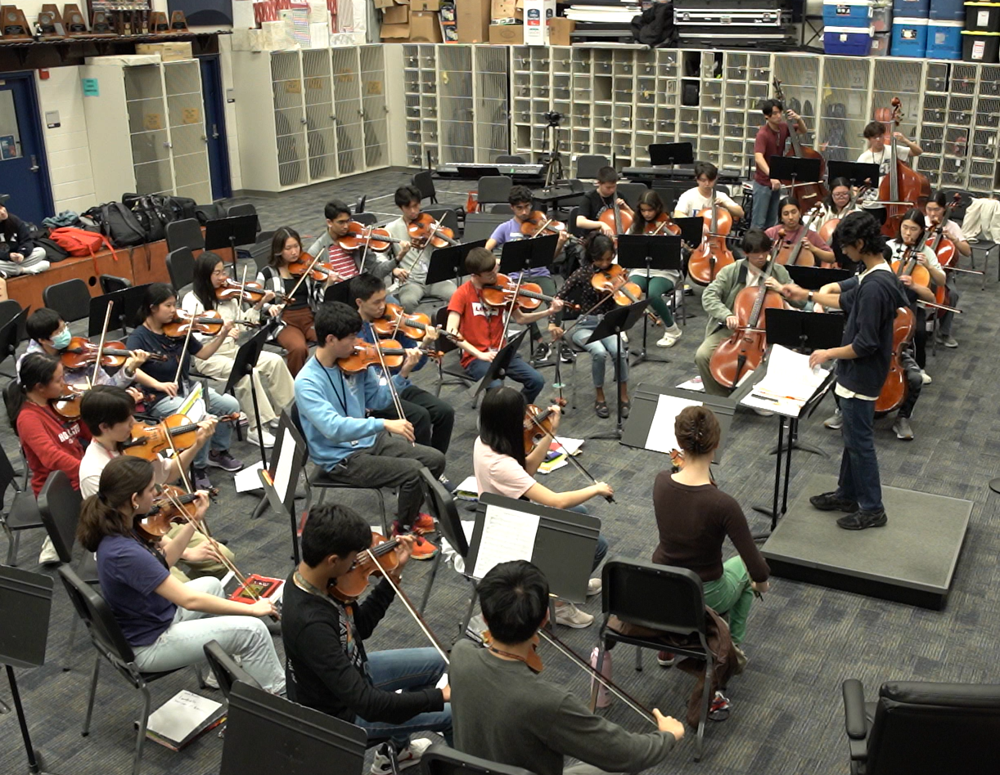

Dreams of Flight
Orchestra · 2025
Program notes
About the Music
High school is often recognized as a transitionary period, the bridge between childhood and adulthood. Gone are the carefree days full of innocence as students step into a newfound sense of awareness and responsibility for their own lives. There’s no right way to navigate this journey. Some hold onto old friends and habits like a lifeline while others jump at the chance to meet new people, explore new interests, and join communities full of like-minded people. No matter what path students choose, they will inevitably change and grow in some way, setting the foundation for who they are and who they want to be.
Nikhil Murali’s Dreams of Flight is first and foremost a piece about growth. Growth itself can be a personal decision, but more often than not, it’s the fated outcome of encountering new experiences. Though Murali's inspiration was rooted in his own experiences, he manages to capture the very concept of growth in his piece. There are moments of excitement and wonder followed by moments of tension and uncertainty, emblematic of the dramatic shifts in emotion that make up our natural response to change. These shifts encapsulate the idea that change is unpredictable and even unwelcome at times: when approaching these daunting challenges, it can be difficult to see how these experiences could lead to something good. But if we meet these changes with open arms and embrace them as they are, we as individuals open ourselves to learning, understanding, acceptance. We open ourselves to personal growth.
There’s a sense of bittersweet gratitude as the piece fades and we take flight, having become more than who we used to be. This incredible part of the journey has come to an end, but a new chapter begins, ready to be explored by the person who emerged on the other side of the bridge.
Program note by friend of the composer, Sofia Briceño
Performance
In Performance

Software-Generated Audio
Score